Use cases
These are the situations the design is tested against. They come from the project plan and drive the requirements, the automated tests and the feature list. Each one says what the alpha does today and what is designed but not yet built. Nothing here is a promise about the alpha; the failure model lists what can still go wrong.
1. "I forgot to copy the file before the trip"
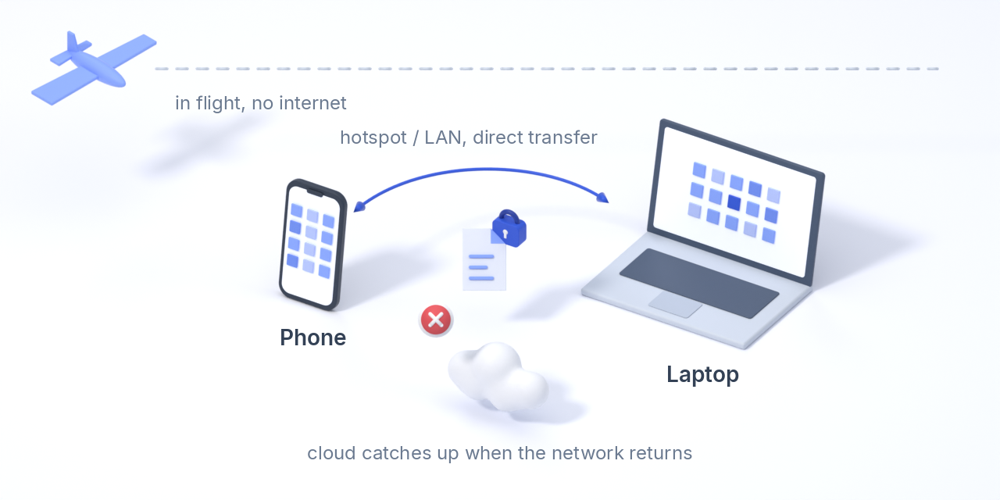
Situation. On a plane you realise the file you need to work on is on your phone, not on the laptop. There is no internet.
How Varsto helps. The two devices find each other locally (the phone's hotspot, Wi-Fi Direct or a paired connection) and the file moves directly from one to the other. On the laptop the folder is in selective mode, so the file is already visible as a placeholder; one click fetches it from the phone. Your edits travel back the same way.
When the network returns at the airport or hotel, both devices push the changes to your cloud storage and the other devices catch up. The ledger knows at every moment which version is where.
Honest notes: aircraft Wi-Fi usually isolates clients, so the phone's own hotspot is the documented first choice. While both devices are in the same bag the changes exist in one place only; the app shows "on these two devices only, not yet in the cloud" and reminds you to sync when a network is available. Signing in, including a security key, works offline because there is no server to ask. Today: selective sync, placeholders, the ledger and direct device-to-device transfer on the LAN exist (the phone's hotspot is a LAN); the cloud catches up when it is reachable. Across the internet a device must listen on a reachable address for now.
2. The stolen laptop
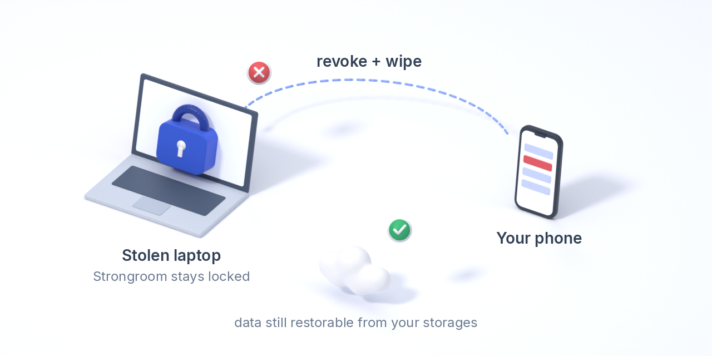
The thief gets the machine open. Strongroom folders stay locked because they need your security key, not a password that may be cached. From another device you revoke the laptop and queue a wipe command that runs the moment it comes online. Everything is still restorable from your own storages. The ledger's revocation cut-off means events signed by the stolen device after that point are quarantined rather than trusted.
Today: Strongroom folders exist (the key lives only while your security key is touched), and a device restored from an old backup is detected and fenced in the ledger. Revocation and wipe are designed, not built.
3. A provider closes your account or loses your data
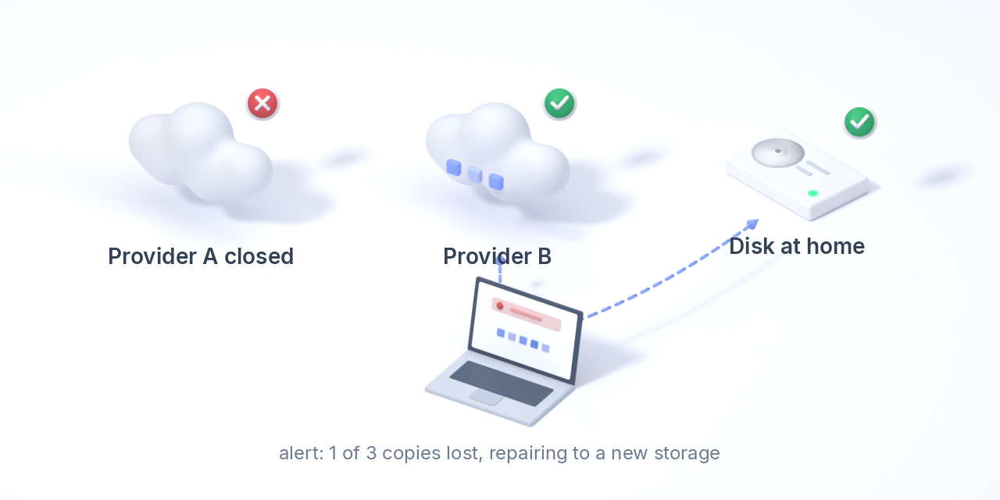
Your storage box is shut down without warning. Your data is also on a second provider and on your own devices, because Varsto never relies on one storage. The app alerts you that a policy is no longer met, repairs the missing copies to another storage, and "drain" moves everything off the dead provider's record. Switching providers is an ordinary operation, not a migration project.
Today: any number of storages (directories, S3 buckets, rclone remotes), durability policies that warn in the app and by notification when a rule is at risk or broken, fsck reports which claimed copies a storage can no longer back, and new storages receive what they lack. Automatic repair and drain are designed.
4. The house fire
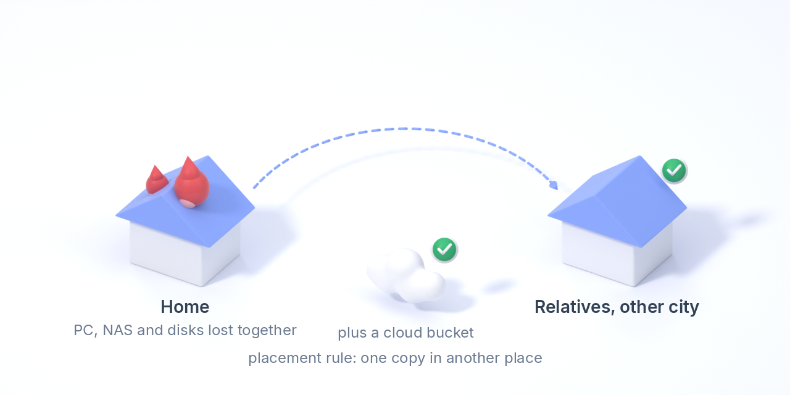
Everything at home goes at once: PC, NAS, the disks in the cupboard. Placement rules by location ("one copy outside this place") have made sure every file also exists in another city or country, in a cloud bucket, on a disk kept at relatives, or on an untrusted replica at a friend's. Devices in the same place are treated as one failure domain, so two copies in the same room never count as two.
Today: every storage carries a place label (home, cloud, offsite, ...) and a folder policy such as "at least one copy in place cloud" is checked from the ledger on every device, with a warning before it breaks. Grouping whole devices into sites is designed.
5. The camera roll is full
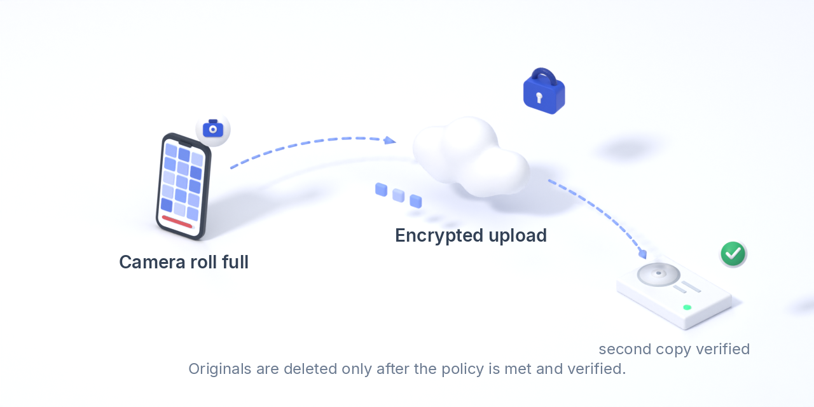
Automatic camera upload moves photos and videos to your storages, encrypted on the phone before they leave it. "Free up space" deletes the originals only after your retention policy is satisfied and the copies have been verified by hash, not merely uploaded. Thumbnails stay on the phone so the gallery still looks like a gallery.
Today: encrypted thumbnails and verified copies exist in the core; the Android shell runs the service but has no camera upload yet.
6. A new device, or a small phone
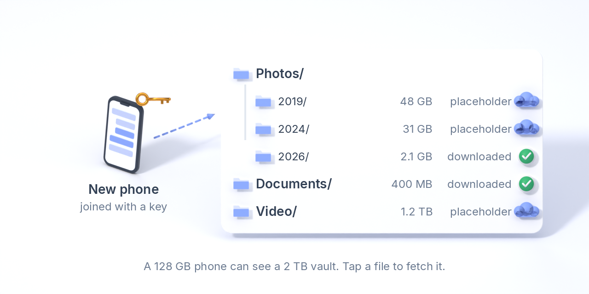
Join a new device with your key and the whole folder tree appears at once as placeholders. Only what you open is downloaded, and large folders never fill a small disk. A phone with 128 GB can carry a 2 TB vault. "Free up space" turns a file back into a placeholder when it is safely stored elsewhere.
Today: varsto folder attach --selective, fetch and free, in the CLI and the desktop interface. Finder, Explorer and Files integration comes later.
7. "Tidy this folder for me"
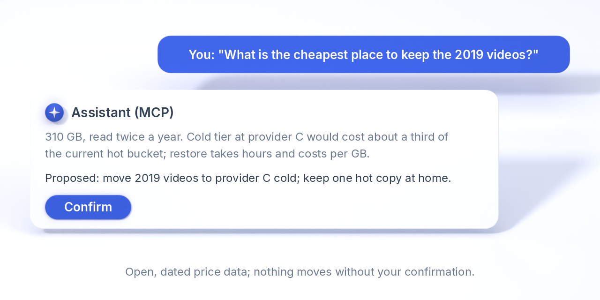
Ten years of scanned letters, receipts and notes in one folder. You grant the assistant of your choice that folder through Varsto's MCP server. It reads the files, works out what belongs together, proposes a structure (by year, by counterparty, by project), and after you confirm it moves the files into it and writes an index of what went where. Everything stays encrypted on your own storage; the assistant sees only that folder, and nothing of your Strongrooms.
Where idle data should live is Varsto's own call, not the assistant's: the app keeps a last-used record for every file and suggests, in the interface, what has not been touched in months and what it would cost in a cold storage class, with sources and dates.
Today: varsto mcp with per-folder grants, read, move, create directories and write notes; Varsto's own placement estimate in the interface and on the command line. Carrying out a placement change with one click is next.
8. Sensitive documents
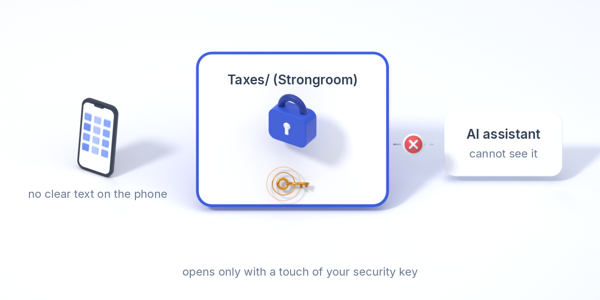
The tax folder lives in a Strongroom: it opens only with a touch of your FIDO2 security key, enforced in the cryptography, not by a dialog. On the phone nothing from it is ever written in clear text, and the assistant cannot see that the folder exists. Once the folder is closed, the key leaves memory.
Today: Strongroom folders open only with a FIDO2 security key (libfido2 tools) and are invisible to assistants; nothing is written in clear text on storage. Decrypt-on-open viewers on the phone are in the plan.
9. Tens of terabytes on old disks
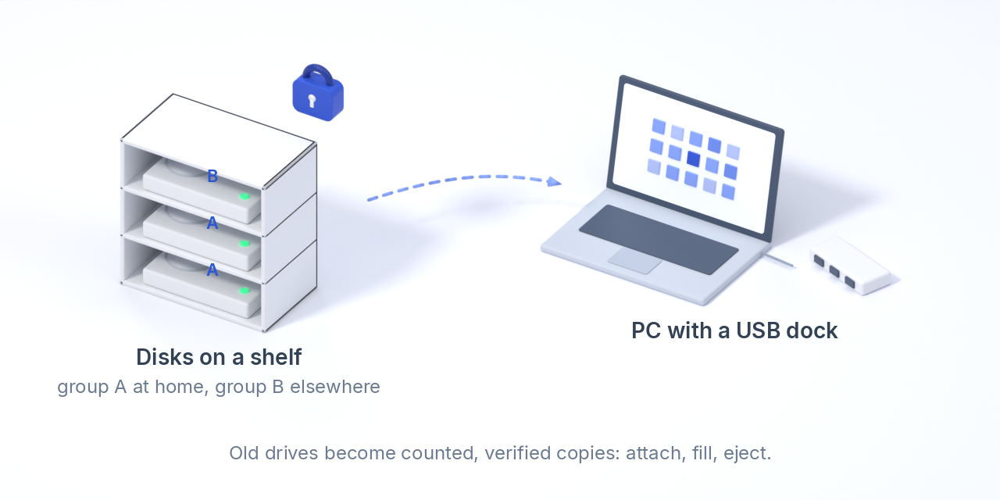
Situation. You manage a huge archive on old hard disks through a USB dock. The disks sit in a cupboard; some are kept elsewhere. Today you track them with a spreadsheet, or with git-annex.
How Varsto helps. Plug in disk "data-01" and tell the app to use it. It fills the disk according to your retention policy, tells you when it can be ejected, and records in the ledger what is on it, where it is kept and when it was last verified. When you need a large file on the laptop and the cloud download would take hours, the app proposes: "Attach disk data-01 (shelf: home); about 12 minutes instead of 9 hours from the cloud". A folder can be kept only on disks, replicated as many times as you choose, with no cloud copy.
Today: a disk pool is a storage; varsto disk add registers a disk, fills it within its reserve and remembers what is on it, disk check verifies and tops it up when it comes back, disk eject says when it is safe to remove, and a file whose copy is on a disk that is away says "attach disk data-01 (shelf)" in the app and on the command line. Policies count an offline disk at its last verification. Not yet: time estimates in the prompt, placement across disk groups, "disks only" folders and git-annex import.
10. Gigabytes between home and office, with no upload
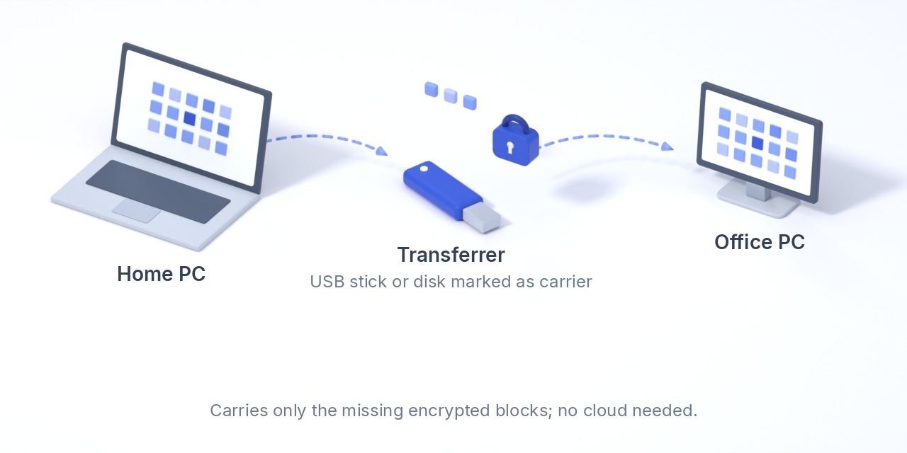
Mark a USB stick or an external disk as a transferrer and attach it to both machines. It receives only the encrypted blocks the other side still lacks; once both ends hold a block it is deleted from the stick, which also carries the ledger batches, so the two machines agree on what happened even if they never share a network. Edit footage at the office, carry the stick home, plug it in, done.
varsto storage add-local stick /media/usb --carrier on both devices.
11. Two friends host each other's backups
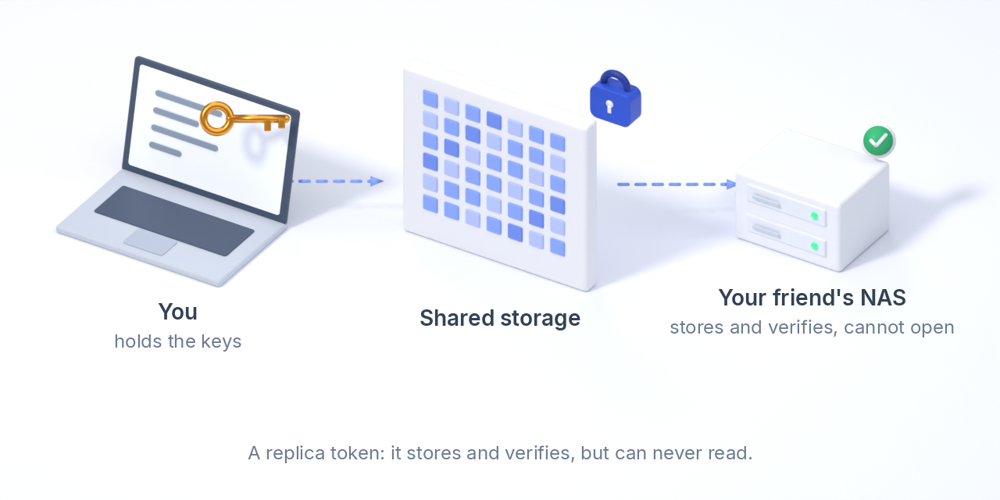
You give a friend a replica token. Their device copies your encrypted objects from a storage you both reach onto its own disk, verifies every hash and writes its own signed report into your ledger. It never receives a key that opens anything; it learns object names and sizes, exactly what a cloud provider learns. In your app the copies show up as verified. They do the same with your NAS. Neither of you can read the other's files, and both of you have an off-site copy for free.
varsto replica token on your side; varsto replica init and replica run on theirs. The same mechanism serves a rented box you do not trust.
12. Sharing a folder with another Varsto user
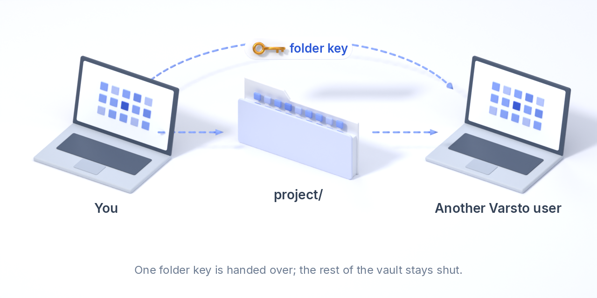
The other user's device prints a request code; you seal the folder key to it (hybrid X25519 + ML-KEM-768) and send the token back over any channel, since only their device can open it. They point the folder at storage both of you can reach and from then on sync and read it like any of their own. Their device writes its own signed ledger under the folder key, so you see their copies too. Confirming who sent a request code, QR invitations and revocation are the next steps.
varsto share create docs and, for the recipient, varsto share accept, or the same buttons in the desktop interface.
13. Browsing photos on a device that has not downloaded them
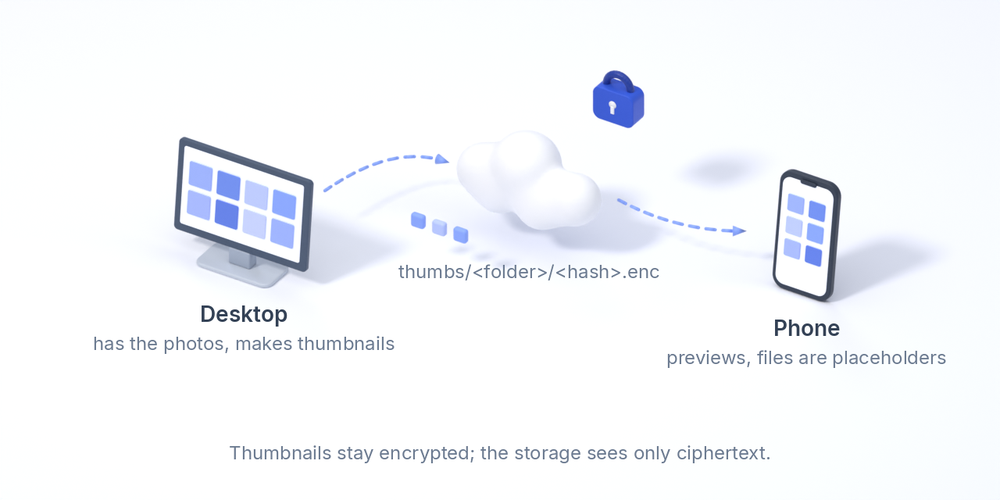
The device that holds the photos and videos generates thumbnails once, encrypts them under the folder key and stores them next to the data. Every other device with the key, including a phone whose folder is all placeholders, shows the previews without fetching a single picture. Storage providers see ciphertext only, for the thumbnails as for everything else.
How these are tested
The automated suite in the repository plays several of these scenarios with two or three simulated devices that are never online at the same time: offline convergence, concurrent edits with conflict copies, a device restored from an old backup, a replica, a shared folder, a transferrer disk, selective sync and thumbnails. The plan adds virtual-machine tests for the plane scenario (two devices on an isolated LAN, then the network returns) and for removable disks (unplug during a write, bit rot, a cloned disk). See Testing and the failure model.